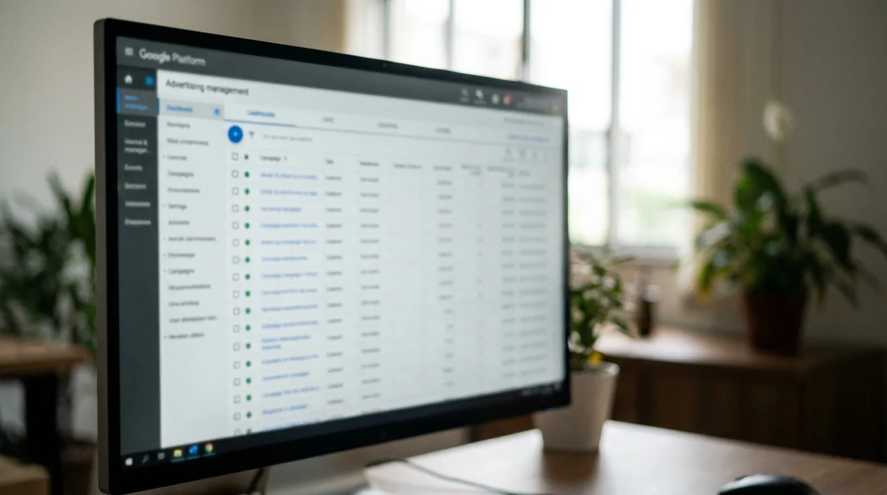

Google Ads ou Meta Ads: Onde Investir Primeiro
Você separou um orçamento para anunciar. Talvez R$ 1.000, talvez R$ 3.000 por mês. E aí veio a dúvida que trava todo mundo no começo: coloca no Google ou no Instagram?
Quem vende gestão de tráfego costuma responder "os dois". Na maior parte das vezes, para quem está começando, essa é a pior resposta possível. Dividir R$ 1.000 entre duas plataformas normalmente produz duas campanhas ruins em vez de uma boa.
Este guia mostra como escolher entre Google Ads ou Meta Ads com base no seu tipo de negócio, e não na preferência de quem está vendendo o serviço.
A diferença que decide tudo: demanda contra descoberta
Se você entender só uma coisa deste texto, que seja esta.
Google Ads captura demanda que já existe. A pessoa tem um problema, digita a solução e você aparece. Quem busca "conserto de ar-condicionado em Belo Horizonte" quer resolver isso hoje. A intenção já está formada, e você só precisa estar no caminho.
Meta Ads cria demanda. A pessoa está no Instagram vendo foto de amigo e o seu anúncio aparece no meio. Ela não estava procurando nada. Você precisa interromper, despertar interesse e convencer, tudo isso antes que o polegar continue rolando.
Daí sai a regra prática mais útil que existe nesse assunto:
As pessoas procuram o que você vende no Google? Se procuram, na dúvida entre Google Ads ou Meta Ads, comece pelo Google. Se ninguém sabe que aquilo existe, ou se não é o tipo de coisa que se pesquisa, comece pelo Meta.
Encanador, advogado, dentista, guincho, assistência técnica: a pessoa busca. Google.
Curso sobre um método novo, produto de desejo, artesanato, moda, infoproduto: ninguém acorda pesquisando. Meta.
As duas plataformas lado a lado
| Critério | Google Ads | Meta Ads |
|---|---|---|
| Tipo de demanda | Já existe, a pessoa procura | Precisa ser despertada |
| Intenção de compra | Alta | Baixa a média |
| Custo por clique | R$ 1,50 a R$ 8,00 | R$ 0,50 a R$ 3,00 |
| Custo por lead qualificado (contato de alguém interessado) | R$ 15 a R$ 120 | R$ 15 a R$ 80 |
| Velocidade do resultado | Rápida, às vezes no primeiro dia | Média, exige teste de criativo |
| Peso da imagem e do vídeo (o "criativo") | Baixo, o texto resolve | Altíssimo, é o que decide |
| Alcance de quem não conhece você | Limitado | Amplo |
| Complexidade de gestão | Média | Alta, o criativo cansa rápido |
| Melhor para | Serviço local, urgência, comparação | Produto visual, desejo, público novo |
Os números de custo acima são a faixa que a gente observa no Brasil em 2026, e variam bastante por nicho. O artigo sobre quanto custa tráfego pago abre essa conta em detalhe.
Repare no que a tabela mostra: o clique no Meta é mais barato, e mesmo assim o Google costuma valer a pena. É que clique barato de gente sem intenção não vira venda. O que importa não é o custo do clique, é o custo do cliente.
Quando começar pelo Google Ads
Você vende serviço local com urgência. Chaveiro, desentupidora, guincho, assistência técnica, emergência odontológica. A pessoa busca e contrata em minutos. É o cenário em que o Google é imbatível.
Seu produto é comparado antes da compra. Software, equipamento, serviço técnico. Quem compara, pesquisa.
O ticket é alto e a decisão é racional. Consultoria, jurídico, contabilidade, obra.
Você já tem site que converte. O Google manda gente pronta para agir, e ela precisa cair numa página que responde rápido. Se o site é lento ou confuso, o dinheiro se perde ali, e é por isso que a manutenção de site entra na conta de quem anuncia. Vale conferir também o Google Meu Negócio, que reforça a presença local e não custa mídia.
Você tem pouco orçamento e precisa de resultado logo. Campanha de busca bem montada pode gerar contato no primeiro dia. No Meta, normalmente há uma fase de teste de criativo antes de acertar.
O que muda quando o negócio é local
Para quem atende uma cidade ou uma região, a conta muda a favor do Google, e por uma razão específica: a busca local tem intenção altíssima e concorrência limitada ao seu raio de atuação.
Quem digita "eletricista em Belo Horizonte" está a minutos de contratar alguém, e você disputa esse clique apenas com os concorrentes da cidade, não com o Brasil inteiro. Acrescente a isso o perfil no Google Meu Negócio, que aparece no mapa sem custo de mídia. Somados, fazem do Google o caminho mais curto para o primeiro resultado.
O Meta ainda tem papel aqui, principalmente para bairro e vizinhança, mas costuma vir depois. Na decisão entre Google Ads ou Meta Ads para negócio local, comece pela busca e use o Meta para reforçar reconhecimento na região.
Quando começar pelo Meta Ads
Seu produto entra pelos olhos. Moda, decoração, gastronomia, estética, arquitetura, turismo. Se a foto vende, o Instagram é o lugar.
Ninguém procura o que você vende. Produto novo, método próprio, serviço que a pessoa não sabe que precisa.
Você quer alcançar quem ainda não conhece a marca. O Meta é melhor para apresentar o negócio a público novo.
Você tem material visual bom. Aqui é pré-requisito, não diferencial. Sem foto e vídeo de qualidade, a campanha não sai do lugar.
Seu público é definido por perfil, não por busca. Mulheres de 25 a 40 anos, com filho pequeno, numa região específica. O Meta segmenta por características; o Google, por intenção.
Você quer remarketing forte. Mostrar anúncio de novo para quem já entrou no seu site é barato e eficiente no Meta.
E se eu quiser fazer os dois?
Faz sentido, mas depois. E com uma divisão que tem lógica.
O limiar prático é R$ 1.500 por mês de mídia. Abaixo disso, dividir prejudica: as duas campanhas ficam sem dado suficiente para o algoritmo aprender, e você acaba com duas medianas em vez de uma boa.
| Mídia mensal | Recomendação |
|---|---|
| Abaixo de R$ 1.500 | Uma plataforma só, escolhida pela regra da demanda |
| De R$ 1.500 a R$ 3.000 | Mantém a que funciona e testa a segunda com 20% a 30% do orçamento |
| Acima de R$ 3.000 | As duas com papéis definidos e medição integrada |
| E-commerce com catálogo | As duas desde cedo, mostrando de novo o produto exato que a pessoa olhou |
Quando as duas rodam juntas, a combinação que costuma funcionar é esta: Meta apresenta, Google fecha. A pessoa descobre a marca no Instagram, pesquisa o nome no Google dias depois e encontra você lá também. Isso é uma estratégia, não desperdício.
O que não funciona é rodar as duas com a mesma mensagem para o mesmo público sem entender o papel de cada uma.
Se você já tem uma verba definida e quer saber como dividi-la no seu caso, fale com a gente e traga o que vende e para quem.

Os formatos de campanha que você precisa conhecer
Escolher entre Google Ads ou Meta Ads é só a primeira decisão. Dentro de cada plataforma existem formatos com finalidades diferentes, e usar o errado explica boa parte das campanhas que decepcionam.
No Google Ads:
- Rede de Pesquisa. O anúncio de texto que aparece quando alguém busca. É por onde quase todo negócio deve começar, porque é onde a intenção está.
- Performance Max. A plataforma distribui sozinha por todo o inventário do Google: pesquisa, banners em outros sites, YouTube, Discover, Gmail e Maps. Rende bem com histórico de conversão, e queima orçamento sem ele.
- Demand Gen. Formato mais visual, voltado a descoberta no YouTube, Discover e Gmail. Absorveu as antigas campanhas Discovery.
- Rede de Display. Banners em sites parceiros. Serve para lembrar quem já visitou, não para vender a quem nunca ouviu falar de você.
- YouTube. Vídeo. Alcance grande e conversão direta baixa, indicado para marca.
- Google Shopping. Só para quem vende produto físico com catálogo.
No Meta Ads:
- Tráfego. Leva a pessoa ao site. É o formato mais escolhido por engano: entrega cliques baratos que muitas vezes não convertem.
- Vendas. Otimiza para quem realmente compra ou pede orçamento. Costuma ser o objetivo certo, e exige o pixel instalado e funcionando.
- Cadastros. O formulário abre dentro do Instagram ou do Facebook. Barato e volumoso, com qualidade menor.
- Engajamento. Interações com a publicação ou com o perfil. Útil para aquecer público, não para vender.
- Reconhecimento. Alcance puro. Faz sentido para marca consolidada, raramente para quem precisa de venda agora.
Uma observação que evita procura inútil na interface: remarketing não é um objetivo de campanha na Meta. É um tipo de público, montado a partir de quem visitou o seu site ou interagiu com o seu perfil, e você o usa dentro de qualquer um dos objetivos acima. É também o que costuma dar o melhor retorno e o mais subaproveitado.
A regra prática: escolha o passo mais perto da venda que já acontece o suficiente para o sistema aprender. Se o site gera vinte contatos por mês, otimize por contato. Se gera dois, otimize por um passo anterior, como o clique no botão do WhatsApp.
O que fazer nas primeiras quatro semanas
Semana 1. Instale e teste as medições antes de gastar qualquer real. No Google, é a tag de conversão, um código que avisa a plataforma quando o clique virou contato. No Meta, é o pixel, que faz o mesmo papel. Conversão, aqui, é a ação que você quer: pedido de orçamento, ligação ou compra. Campanha rodando sem medição é dinheiro gasto às cegas.
Semana 2. Rode só um formato, com orçamento diário estável. As plataformas ajustam sozinhas para quem mostrar o anúncio, e para isso precisam de um número mínimo de contatos por semana. Cada alteração relevante zera essa contagem, então resista à vontade de mexer todo dia.
Semana 3. Olhe os termos de busca reais no Google e, no Meta, quais vídeos as pessoas assistiram por mais tempo antes de largar. Aqui aparecem os desperdícios óbvios, como cliques de quem procurava outra coisa.
Semana 4. Corte o que não deu resultado, dobre no que funcionou e só então avalie abrir um segundo formato. É também o momento de decidir se a escolha entre Google Ads ou Meta Ads foi acertada para o seu caso, agora com dado em vez de opinião.
O erro que custa mais caro que a escolha errada
Na maioria dos casos, a plataforma não é o problema.
A gente vê isso toda semana. A empresa investe, o anúncio roda, os cliques chegam, e a venda não acontece. A conclusão vira "Google Ads não funciona pro meu negócio". Só que o problema estava depois do clique.
A página de destino não convence. Anúncio de "conserto de geladeira" que joga a pessoa na página inicial genérica perde a venda. Ela precisa cair numa página sobre aquilo, com telefone visível e prova de que você existe.
O site é lento. Cada segundo de espera derruba conversão. Você paga pelo clique e o visitante vai embora antes de a página abrir.
Ninguém atende. Um contato que chega às 19h de terça e só recebe resposta na quinta já contratou outro. Velocidade de resposta muda mais o resultado que qualquer ajuste de campanha.
Ninguém mede o que virou venda. Sem CRM e sem rastreamento de conversão, você sabe quantos contatos chegaram, mas não quais fecharam. Aí a decisão de onde investir vira palpite.
Você espera resultado em uma semana. Campanha precisa de tempo e de volume para o algoritmo aprender. Mexer todo dia impede que isso aconteça.
Essas quatro frentes, e não a escolha da plataforma, são o que separa campanha que dá lucro de campanha que dá relatório. Se alguma delas está frágil no seu negócio, comece por aí.
Antes de escolher a plataforma, responda: para onde o clique vai, quanto tempo a página leva para abrir, quem atende o contato e em quanto tempo, e como você vai saber quais anúncios geraram venda. Sem essas quatro respostas, o orçamento vai render menos em qualquer plataforma.
Como decidir em três perguntas
1. As pessoas pesquisam o que você vende?
Se sim, Google Ads. Se não, Meta Ads. Para conferir sem achismo, o planejador de palavras-chave do Google mostra o volume de busca dos termos do seu serviço.
2. Seu produto se explica melhor por imagem ou por texto? Imagem e vídeo puxam para o Meta. Especificação técnica e comparação puxam para o Google.
3. Quanto você pode investir por mês? Abaixo de R$ 1.500 de mídia, escolha uma só. Acima disso, dá para pensar nas duas.
Se as respostas te deixaram na dúvida, isso normalmente significa que o negócio tem os dois perfis, e aí a ordem correta é começar pela plataforma que traz retorno mais rápido, consolidar, e só então abrir a segunda frente com parte do orçamento.
Um exemplo que resume a lógica
Duas empresas de Belo Horizonte, mesmo orçamento de R$ 1.500 por mês.
A primeira conserta ar-condicionado. As pessoas buscam esse serviço quando o aparelho para, normalmente no calor, normalmente com pressa. Anúncio de pesquisa no Google, restrito à região atendida, aparece exatamente nesse momento. O clique custa mais caro, e ainda assim o custo por cliente sai menor, porque quem clica já decidiu contratar alguém hoje.
A segunda vende joias autorais. Ninguém acorda pesquisando pelo nome de uma marca que não conhece. Aqui o caminho é o Meta: foto boa, público segmentado por interesse, remarketing para quem visitou a loja e não comprou. Investir no Google seria disputar termos genéricos e caros contra grandes varejistas, sem chance real.
Mesma verba, decisões opostas, e nenhuma das duas está errada. É por isso que a resposta para Google Ads ou Meta Ads nunca vem de comparativo de plataforma: vem de entender como o seu cliente chega até você. Quem investe em SEO em paralelo leva vantagem. O que as pessoas já buscam sem anúncio mostra se existe procura pelo que você vende, antes mesmo de gastar em mídia.
Perguntas frequentes sobre Google Ads ou Meta Ads
Google Ads ou Meta Ads: qual dá mais resultado? Não existe vencedor absoluto entre Google Ads ou Meta Ads: depende do tipo de demanda. Google Ads rende mais quando as pessoas já procuram o que você vende, porque captura intenção pronta. Meta Ads rende mais quando o produto é visual ou quando ninguém pesquisa por ele, porque alcança público novo.
Qual é mais barato, Google Ads ou Meta Ads? O clique no Meta costuma ser mais barato, entre R$ 0,50 e R$ 3,00, contra R$ 1,50 a R$ 8,00 no Google. Mas o custo que importa é o do cliente, não o do clique: no Google a intenção é maior, então a taxa de conversão tende a compensar o clique mais caro.
Posso anunciar nos dois com pouco dinheiro? Não é recomendado. Abaixo de R$ 1.500 de mídia mensal, dividir entre as duas deixa cada campanha sem dado suficiente para o algoritmo otimizar. Melhor concentrar numa, gerar resultado e só então abrir a segunda.
Quanto preciso investir para começar a anunciar? O piso para uma campanha gerar aprendizado fica em torno de R$ 1.500 mensais de mídia. A conta completa, incluindo gestão e a expectativa por porte de negócio, está no artigo sobre quanto custa tráfego pago.
Em quanto tempo aparecem os resultados? No Google Ads, os primeiros contatos podem chegar no mesmo dia, porque a demanda já existe. No Meta Ads, costuma haver uma fase de teste de criativo de duas a quatro semanas antes de a campanha estabilizar.
Preciso de site para anunciar? Precisa de um destino que converta. Pode ser uma landing page bem-feita, uma página única criada só para aquele anúncio, em vez do site completo, mas mandar tráfego pago para um perfil de rede social ou para uma home genérica desperdiça boa parte do investimento.
Escolha uma, faça bem, depois amplie
A dúvida entre Google Ads ou Meta Ads se resolve com uma pergunta simples: as pessoas procuram o que você vende? Se procuram, o Google é o caminho mais curto para o primeiro resultado. Se não procuram, o Meta é onde você vai encontrá-las.
E vale repetir o que mais impacta o retorno: a plataforma é a parte fácil. O que decide é o que acontece depois do clique. Campanha boa com destino ruim é dinheiro queimado com relatório bonito.
A Drive Digital cuida das duas frentes, do anúncio à página de destino e à medição do que efetivamente fechou. Se você está com um orçamento definido e quer saber onde ele rende mais no seu caso, fale com a gente e conte o que você vende e para quem.